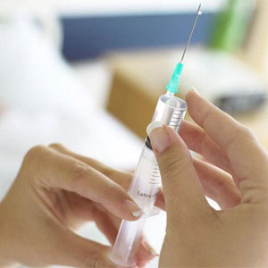
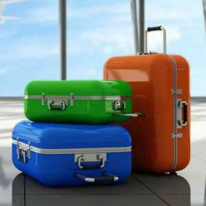
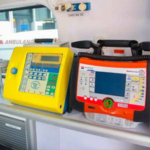

В каких ситуациях нужна транспортировка в реанимобиле?
Причин обратиться за подобными платными услугами – достаточно, однако чаще всего помощь необходима при:
- госпитализации пациента или транспортировки после выписки,
- переезд в другой стационар или поездка в другую больницу для обследования,
- сопровождение при переезде в другой город.
Вне зависимости от состояния больного, ему нужно разрешение лечащего врача на транспортировку.
В стоимость транспортных услуг включено

назначенных врачом


перемещения и базовых процедур
Сопровождение по больнице на процедуры - БЕСПЛАТНО
Почему стоит выбирать именно реанимационный автомобиль?
Нужно понимать, что реанимобили оборудованы всем необходимым для поддержания стабильного состояния пациента. Помимо того, что в машине будет вестись мониторинг жизненных показателей, при необходимости также могут быть задействованы дефибрилляторы, аппараты ИВЛ, ингаляторы и прочие возможности.
Опытные специалисты «Мед-перевозка.рф» помогают с обезболиванием и интенсивной терапией прямо в пути, что гарантирует максимально поддержание больного до приезда в больницу даже в самых тяжелых состояниях.
При том, что стоимость услуги доступна всем, инвалиду будет обеспечен полный комфорт в машине. Это включает не только удобное размещение больного в кабине, но также создание оптимальной температуры воздуха и других показателей.
Преимущества
Как заказать реанимобиль?
Для заказа реанимационного автомобиля вам нужно позвонить по нашему номеру телефона, который указан на сайте. Мы занимаемся медицинскими перевозками круглосуточно, поэтому окажемся на вызове в любое удобное время.
Сообщите оператору всю информацию о дате, времени и адресах отправления и прибытия, а также особенностях состояния больного человека. Мы осуществляем перевозки на любое расстояние – как по городу и области, так и по территории страны. Это позволяет без стресса и нервов добраться до места в комфорте и безопасности.